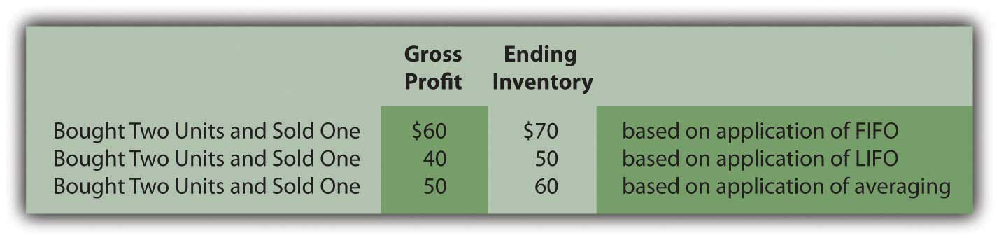
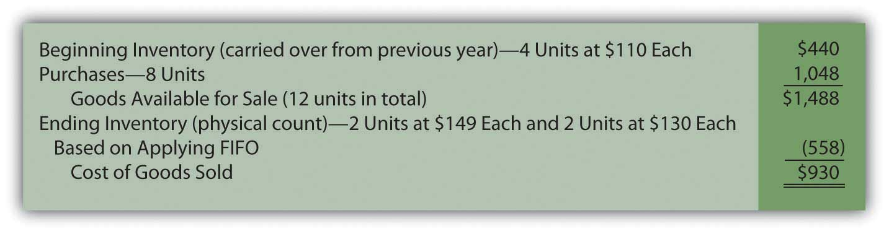
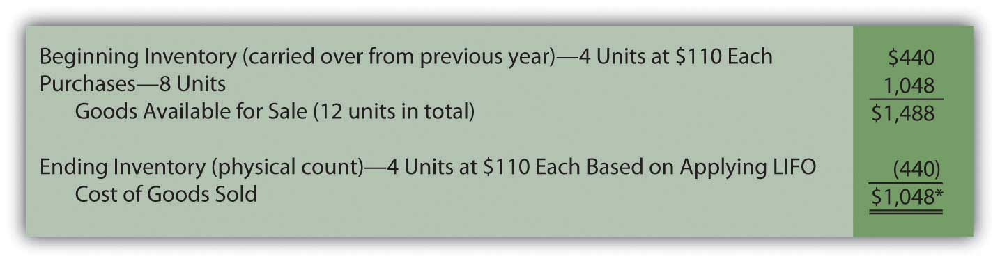
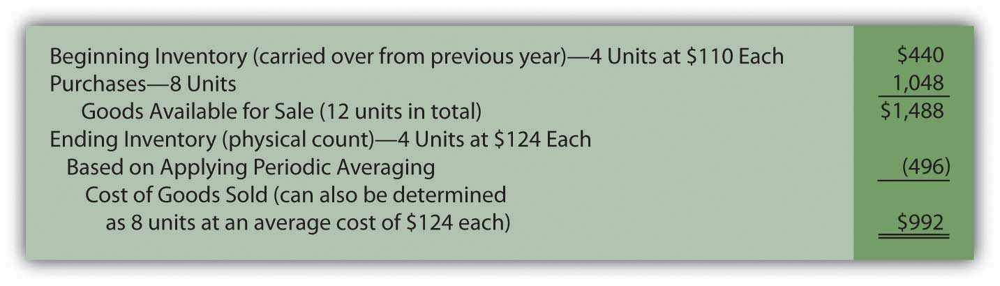
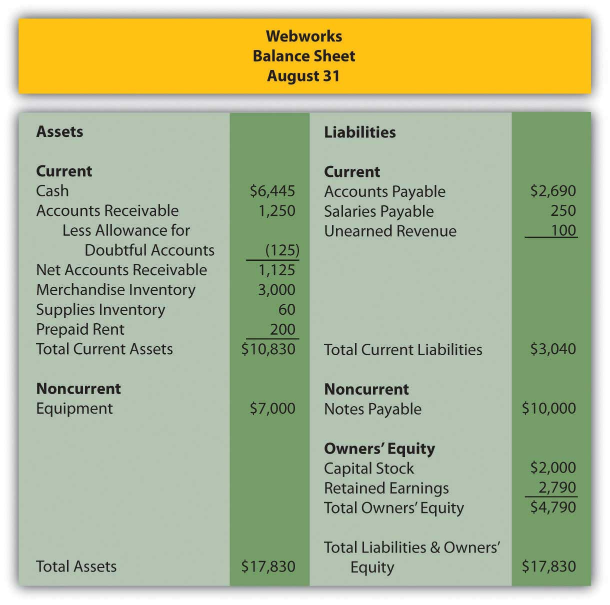

Joe introduces Chapter 9 "Why Does a Company Need a Cost Flow Assumption in Reporting Inventory?" and speaks about the course in general.
At the end of this section, students should be able to meet the following objectives:
Question: In the coverage of financial accounting to this point, general standardization has been evident. Most transactions are recorded in an identical fashion by all companies. This defined structure helps ensure understanding. It also enhances the ability of decision makers to compare results from one year to the next or from one company to another. For example, inventory—except in unusual circumstances—is always reported at historical cost unless its value is lower. Experienced decision makers should be well aware of that criterion when they are reviewing the inventory figures reported by a company.
However, an examination of the notes to financial statements for some well-known businesses shows an interesting inconsistency in the reporting of inventory (emphasis added).
Mitsui & Co. (U.S.A.) Inc.—as of March 31, 2009: “Inventories, consisting mainly of commodities and materials for resale, are stated at the lower of cost, principally on the specific-identification basis, or market.”
Johnson & Johnson and Subsidiaries—as of December 28, 2008: “Inventories are stated at the lower-of-cost-or-market determined by the first-in, first-out method.”
Safeway Inc. and Subsidiaries—as of December 31, 2008: “Merchandise inventory of $1,740 million at year-end 2008 and $1,866 million at year-end 2007 is valued at the lower of cost on a last-in, first-out (‘LIFO’) basis or market value.”
Bristol-Myers Squibb—as of December 31, 2008: “Inventories are generally stated at average cost, not in excess of market.”
“Specific-identification basis,” “first-in, first-out,” “last-in, first-out,” “average cost”—what information do these terms provide? Why are all of these companies using different methods? In the financial reporting of inventory, what is the significance of disclosing that a company applies “first-in, first-out,” “last-in, first-out,” or the like?
Answer: In the previous chapter, the cost of all inventory items was kept constant over time. Although that helped simplify the initial presentation of relevant accounting issues, such stability is hardly a realistic assumption. For example, the retail price of gasoline has moved up and down like a yo-yo in recent years. The cost of some commodities, such as bread and soft drinks, has increased gradually for many decades. In other industries, prices actually tend to fall over time. New technology products often start with a high price that drops as the manufacturing process ramps up and becomes more efficient. Several years ago, personal computers cost tens of thousands of dollars and now sell for hundreds.
A key event in accounting for inventory is the transfer of cost from the inventory T-account to cost of goods sold as the result of a sale. The inventory balance is reduced and the related expense is increased. For large organizations, such transactions can take place thousands of times each day. If each item has an identical cost, no problem exists. This standard amount is always reclassified into expense to reflect the sale.
However, if inventory items are acquired at different costs, which cost is moved from asset to expense? At that point, a cost flow assumption must be selected by company officials to guide reporting. That choice can have a significant impact on both the income statement and the balance sheet. It is literally impossible to analyze the reported net income and inventory balance of a company such as ExxonMobil without knowing the cost flow assumption that has been applied.
Question: An example is probably the easiest approach by which to demonstrate cost flow assumptions. Assume a men’s retail clothing store holds $120 in cash. On October 26, Year One, one blue dress shirt is bought for $50 in cash for resell purposes. Later, near the end of the year, this style of shirt becomes especially popular. On December 29, Year One, the store’s manager buys a second shirt exactly like the first but this time at a cost of $70. Cash on hand has been depleted completely ($120 less $50 and $70) but the company now holds two shirts in its inventory.
Then, on December 31, Year One, a customer buys one of these two shirts by paying cash of $110. Regardless of the cost flow assumption, the company retains one blue dress shirt in inventory at the end of the year and cash of $110. It also reports sales revenue of $110. Those facts are not in doubt.
From an accounting perspective, two questions are left to be resolved (1) what is the cost of goods sold reported for the one shirt that was sold and (2) what is the cost remaining in inventory for the one item still on hand?
In simpler terms, should the $50 or $70 be reclassified to cost of goods sold; should the $50 or $70 remain in ending inventory? For financial accounting, the importance of the answers to those questions cannot be overemphasized. What are the various cost flow assumptions and how are they applied to inventory?
Answer: SPECIFIC IDENTIFICATION. In a literal sense, specific identificationInventory cost flow method in which a company physically identifies both its remaining inventory and the inventory that was sold to customers. is not a cost flow assumption. Companies that use this approach are not making an assumption because they know which item was sold. By some technique, they are able to identify the inventory conveyed to the customer and reclassify its cost to expense.
For some types of inventory, such as automobiles held by a car dealer, specific identification is relatively easy to apply. Each vehicle tends to be somewhat unique and can be tracked through identification numbers. Unfortunately, for many other types of inventory, no practical method exists for determining the physical flow of merchandise.
Thus, if the men’s retail store maintains a system where the individual shirts are marked in some way, it will be possible to know whether the $50 shirt or the $70 shirt was actually conveyed to the customer. That cost can be moved from asset to expense.
However, for identical items like shirts, cans of tuna fish, bags of coffee beans, hammers, packs of notebook paper and the like, the idea of maintaining such precise records is ludicrous. What informational benefit could be gained by knowing whether the first blue shirt was sold or the second? In most cases, the cost of creating such a meticulous record-keeping system far outweighs any potential advantages.
FIRST-IN, FIRST-OUT (FIFO). The FIFOInventory cost flow assumption based on the oldest costs being transferred first from inventory to cost of goods sold so that the most recent costs remain in ending inventory. cost flow assumption is based on the premise that selling the oldest item first is most likely to mirror reality. Stores do not want inventory to grow unnecessarily old and lose freshness. The oldest items are often placed on top in hopes that they will sell first before becoming stale or damaged. Therefore, although the identity of the actual item sold is rarely known, the assumption is made in applying FIFO that the first (or oldest) cost is always moved from inventory to cost of goods sold.
Note that it is not the oldest item that is necessarily sold but rather the oldest cost that is reclassified to cost of goods sold. No attempt is made to determine which shirt was purchased by the customer. Here, because the first shirt cost $50, the following entry is made to record the expense and reduce the inventory.
Figure 9.1 Journal Entry—Reclassification of the Cost of One Piece of Inventory Using FIFO

For this retail store, the following financial information is reported if FIFO is applied. Two shirts were bought for ($50 and $70) and one shirt was sold for $110.
| FIFO | |
|---|---|
| Cost of Goods Sold (One Unit—the First One) | $50 |
| Gross Profit ($110 less $50) | $60 |
| Ending Inventory (One Unit—the Last One) | $70 |
In a period of rising prices, the earliest (cheapest) cost moves to cost of goods sold and the latest (more expensive) cost is retained in ending inventory. For this reason, in inflationary times, FIFO is associated with a higher reported net income as well as a higher reported inventory total on the company’s balance sheet. Not surprisingly, these characteristics help make it a popular choice.
Link to multiple-choice question for practice purposes: http://www.quia.com/quiz/2092903.html
LAST-IN, FIRST-OUT (LIFO). LIFOInventory cost flow assumption based on the most recent costs being transferred first from inventory to cost of goods sold so that the oldest costs remain in ending inventory. is the opposite of FIFO: the most recent costs are moved to expense as sales are made.
Theoretically, the LIFO assumption is often justified as more in line with the matching principle. Shirt One was bought on October 26 whereas Shirt Two was not acquired until December 29. Revenue was earned on December 31. Proponents of LIFO argue that matching the December 29 cost with the December 31 revenue is more appropriate than using a cost incurred months earlier. According to this reasoning, income is more properly determined with LIFO because a relatively current cost is shown as cost of goods sold rather than a figure that is out-of-date. The difference is especially apparent in periods of high inflation. “By matching current costs against current sales, LIFO produces a truer picture of income; that is, the quality of income produced by the use of LIFO is higher because it more nearly approximates disposable income.”Clayton T. Rumble, “So You Still Have Not Adopted LIFO,” Management Accountant, October 1983, 50. Note 1 to the 2008 financial statements for ConocoPhillips reiterates that point: “LIFO is used to better match current inventory costs with current revenues.”
The last cost incurred in buying two blue shirts was $70 so that amount is reclassified to expense at the time of the first sale.
Figure 9.2 Journal Entry—Reclassification of the Cost of One Piece of Inventory Using LIFO

Although the physical results of these transaction are the same (one unit was sold, one unit was retained, and the company holds $110 in cash), the financial picture painted using the LIFO cost flow assumption is quite different from in the earlier FIFO example.
| LIFO | |
|---|---|
| Cost of Goods Sold (One Unit—the Last One) | $70 |
| Gross Profit ($110 Less $70) | $40 |
| Ending Inventory (One Unit—the First One) | $50 |
Characteristics commonly associated with LIFO can be seen in this example. When prices rise, LIFO companies report lower net income (the most recent and, thus, the most costly purchases are moved to expense) and a lower inventory account on the balance sheet (because the earlier and cheaper costs remain in the inventory T-account). As will be discussed in a subsequent section, LIFO is popular in the United States because it helps reduce the amount companies pay in income taxes.
Link to multiple-choice question for practice purposes: http://www.quia.com/quiz/2092888.html
AveragingInventory cost flow assumption based on the average cost being transferred from inventory to cost of goods sold so that the same average cost remains in ending inventory.. Because the identity of the items conveyed to buyers is unknown, this final cost flow assumption holds that using an average of all costs is the most logical solution. Why choose any individual cost if no evidence exists of its validity? The first item received might have been sold or the last. Selecting either is an arbitrary decision. If items with varying costs are held, using an average provides a very appealing logic. In the shirt example, the two units cost a total of $120 ($50 plus $70) so the average is $60 ($120/2 units).
Figure 9.3 Journal Entry—Reclassification of the Cost of One Piece of Inventory Using Averaging

Although no shirt did cost $60, this average serves as the basis for both cost of goods sold as well as the cost of the item still on hand. All costs are included in arriving at each reported figure.
| Averaging | |
|---|---|
| Cost of Goods Sold (One Unit—the Average One) | $60 |
| Gross Profit ($110 less $60) | $50 |
| Ending Inventory (One Unit—the Average One) | $60 |
Averaging has many supporters. However, it can be a more complicated system to implement especially if costs change frequently. In addition, it does not offer the benefits that make FIFO (higher reported income) and LIFO (lower taxes in the United States) so appealing. Company officials often arrive at such practical decisions based on an evaluation of advantages and disadvantages and not on theoretical merit.
Link to multiple-choice question for practice purposes: http://www.quia.com/quiz/2092923.html
U.S. GAAP tends to apply standard reporting rules for many transactions to make financial statements more usable by decision makers. The application of an inventory cost flow assumption is one area where a significant variation is present. A company can choose to use specific identification, first-in, first-out (FIFO), last-in, first-out (LIFO), or averaging. Each of these assumptions determines the cost moved from inventory to cost of goods sold to reflect the sale of merchandise in a different manner. The reported inventory balance as well as the expense on the income statement (and, hence, net income) are dependent on the cost flow assumption that is selected.
At the end of this section, students should be able to meet the following objectives:
Question: FIFO, LIFO, and averaging can present radically different portraits of identical events. Is the gross profit for this men’s clothing store really $60 (FIFO), $40 (LIFO), or $50 (averaging) in connection with the sale of one blue shirt? Analyzing the numbers presented by most companies can be difficult if not impossible without understanding the implications of the assumption applied. Which of the cost flow assumptions is viewed as most appropriate in producing fairly presented financial statements?
Answer: Because specific identification reclassifies the cost of the actual unit that was sold, finding theoretical fault with that approach is difficult. Unfortunately, specific identification is nearly impossible to apply unless easily distinguishable differences exist between similar inventory items. That leaves FIFO, LIFO, and averaging. Arguments over both their merits and problems have raged for decades. Ultimately, the numbers in financial statements must be presented fairly based on the cost flow assumption that is applied.
In Chapter 6 "Why Should Decision Makers Trust Financial Statements?", an important distinction was made. The report of the independent auditor never assures decision makers that financial statements are “presented fairly.” That is a hopelessly abstract concept like truth and beauty. Instead, the auditor states that the statements are “presented fairly…in conformity with accounting principles generally accepted in the United States of America.” That is a substantially more objective standard. Thus, for this men’s clothing store, all the following figures are presented fairly but only in conformity with the cost flow assumption used by the reporting company.
Figure 9.4 Results of Possible Cost Flows Assumptions Used by Clothing Store

Question: Since company officials are allowed to select a cost flow assumption, which of these methods is most typically found in the reporting of companies in the United States?
Answer: To help interested parties gauge the usage of various accounting principles, a survey is carried out annually of the financial statements of six hundred large companies in this country. The resulting information allows accountants, auditors, and decision makers to weigh the validity of a particular method or presentation. For 2007, that survey found the following frequency of application of cost flow assumptions. Some companies use multiple assumptions: one for a particular part of inventory and a different one for the remainder. Thus, the total here is well above six hundred even though over one hundred of the surveyed companies did not have inventory or mention a cost flow assumption (inventory was probably an immaterial amount). As will be discussed a bit later in this chapter, using multiple assumptions is especially common when a U.S. company has subsidiaries located internationally.
| Inventory Cost Flow Assumptions—600 Companies SurveyedYury Iofe, senior editor, and Matthew C. Calderisi, CPA, managing editor, Accounting Trends & Techniques, 62nd edition (New York: American Institute of Certified Public Accountants, 2008), 159. | |
|---|---|
| First-in, First-out (FIFO) | 391 |
| Last-in, First-out (LIFO) | 213 |
| Averaging | 155 |
| Other | 24 |
Interestingly, individual cost flow assumptions tend to be more prevalent in certain industries. In this same survey, 86 percent of the financial statements issued by food and drug stores used LIFO whereas only 10 percent of the companies labeled as “computers, office equipment” had adopted this same approach. That difference could quite possibly be caused by the presence of inflation or deflation. Prices of food and drugs tend to escalate consistently over time while computer prices often fall as technology advances
Question: In periods of inflation, as demonstrated by the previous example, FIFO reports a higher gross profit (and, hence, net income) and a higher inventory balance than does LIFO. Averaging presents figures that normally fall between these two extremes. Such results are widely expected by those readers of financial statements who understand the impact of the various cost flow assumptions.
Any one of these methods is permitted for financial reporting. Why is FIFO not the obvious choice for every organization that anticipates inflation in its inventory costs? Officials must prefer to report figures that make the company look stronger and more profitable. With every rise in prices, FIFO shows a higher income because the earlier (cheaper) costs are transferred to cost of goods sold. Likewise, FIFO reports a higher total inventory on the balance sheet because the later (higher) cost figures are retained in the inventory T-account. The company is no different physically by this decision but FIFO makes it look better. Why does any company voluntarily choose LIFO, an approach that reduces reported income and total assets when prices rise?
Answer: LIFO might well have faded into oblivion because of its negative impact on key reported figures (during inflationary periods) except for a U.S. income tax requirement known as the LIFO conformity ruleA United States income tax rule that requires LIFO to be used for financial reporting purposes if it is adopted for taxation purposes.. Although this tax regulation is not part of U.S. GAAP and looks rather innocuous, it has a huge impact on the way inventory and cost of goods sold are reported to decision makers in this country.
As prices rise, companies prefer to apply LIFO for tax purposes because this assumption reduces reported income and, hence, required cash payments to the government. In the United States, LIFO has come to be universally equated with the saving of tax dollars. When LIFO was first proposed as a tax method in the 1930s, the United States Treasury Department appointed a panel of three experts to consider its validity. The members of this group were split over a final resolution. They eventually agreed to recommend that LIFO be allowed for income tax purposes but only if the company was also willing to use LIFO for financial reporting. At that point, tax rules bled over into U.S. GAAP.
The rationale behind this compromise was that companies were allowed the option but probably would not choose LIFO for their tax returns because of the potential negative effect on figures reported to investors, creditors, and others. During inflationary periods, companies that apply LIFO do not look as financially healthy as those that adopt FIFO. Eventually this recommendation was put into law and the LIFO conformity rule was born. If LIFO is used on a company’s income tax return, it must also be applied on the financial statements.
However, as the previous statistics point out, this requirement did not prove to be the deterrent that was anticipated. Actual use of LIFO has become quite popular. For many companies, the savings in income tax dollars more than outweigh the problem of having to report numbers that make the company look a bit weaker. That is a choice that company officials must make.
Figure 9.5 Advantages and Disadvantages of FIFO and LIFO
*Assumes a rise in prices over time.
Link to multiple-choice question for practice purposes: http://www.quia.com/quiz/2092924.html
Question: The LIFO conformity rule requires companies that apply LIFO for income tax purposes to also use that same method for their financial reporting to investors, creditors, and other decision makers. Is the information submitted to the government for income tax purposes not always the same as that presented to decision makers in a set of financial statements? Reporting different numbers seems unethical.
Answer: In jokes and in editorials, companies are often derisively accused of “keeping two sets of books.” The implication is that one is skewed toward making the company look good (for reporting purposes) whereas the other makes the company look bad (for taxation purposes). However, the existence of separate records is a practical necessity. One set is kept based on applicable tax laws while the other enables the company to prepare its financial statements according to U.S. GAAP. Different rules mean that different numbers result.
In filing income taxes with the United States government, a company must follow the regulations of the Internal Revenue Code.Many states also charge a tax on income. These states have their own unique set of laws although they often resemble the tax laws applied by the federal government. Those laws have several underlying objectives that influence their development.
First, they are designed to raise money for the operation of the federal government. Without adequate funding, the government could not provide hospitals, build roads, maintain a military and the like.
Second, income tax laws enable the government to help regulate the health of the economy. Simply by raising or lowering tax rates, the government can take money out of the economy (and slow public spending) or leave money in the economy (and increase public spending). As an illustration, recently a significant tax break was passed by Congress for first-time home buyers. This move was designed to stimulate the housing market by encouraging additional individuals to consider making a purchase.
Third, income tax laws enable the government to assist certain members of society who are viewed as deserving help. For example, taxpayers who encounter high medical costs or casualty losses are entitled to a tax break. Donations conveyed to an approved charity can also reduce a taxpayer’s tax bill. The rules and regulations were designed to provide assistance for specified needs.
In contrast, financial reporting for decision makers must abide by the guidance of U.S. GAAP, which seeks to set rules for the fair presentation of accounting information. That is the reason U.S. GAAP exists. Because the goals are entirely different, there is no particular reason for the resulting financial statements to correspond to the tax figures submitted to the Internal Revenue Service (IRS). Not surprisingly, though, significant overlap is found between tax laws and U.S. GAAP. For example, both normally recognize the cash sale of merchandise as revenue at the time of sale. However, countless differences do exist between the two sets of rules. Depreciation, as just one example, is computed in an entirely different manner for tax purposes than for financial reporting.
Although separately developed, financial statements and income tax returns are tied together at one significant spot: the LIFO conformity rule. If a company chooses to use LIFO for tax purposes, it must do the same for financial reporting. Without that requirement, many companies likely would use FIFO in creating their financial statements and LIFO for their income tax returns. Much of the popularity shown earlier for LIFO is undoubtedly derived from this tax requirement rather than any theoretical merit.
Information found in financial statements is required to be presented fairly in conformity with U.S. GAAP. Because several inventory cost flow assumptions are allowed, presented numbers can vary significantly from one company to another and still be appropriate. FIFO, LIFO, and averaging are all popular. Understanding and comparing financial statements is quite difficult without knowing the implications of the method selected. LIFO, for example, tends to produce low-income figures in a period of inflation. This assumption probably would not be used extensively except for the LIFO conformity rule that prohibits its use for tax purposes unless also reported on the company’s financial statements. Typically, financial reporting and the preparation of income tax returns are unrelated because two sets of rules are used with radically differing objectives. However, the LIFO conformity rule joins these two at this one key spot.
At the end of this section, students should be able to meet the following objectives:
Question: As a result of the LIFO conformity rule in the tax laws, this cost flow assumption is widely used in the United States. LIFO, though, is not allowed in many other areas of the world. It is not simply unpopular in those locations; its application is strictly forbidden. Thus, international companies are often forced to resort to alternatives in reporting their foreign subsidiaries. For example, a footnote to the 2008 financial statements of American Biltrite Inc. explains that “Inventories are stated at the lower-of-cost-or-market. Cost is determined by the last-in, first-out (LIFO) method for most of the Company’s domestic inventories. The use of LIFO results in a better matching of costs and revenues. Cost is determined by the first-in, first-out (FIFO) method for the Company’s foreign inventories.”
Why is LIFO not accepted in most countries outside the United States?
Answer: Although LIFO can be supported as providing a proper matching of expenses (cost of goods sold) with revenues, a number of serious theoretical problems are created by its application. The most common accusation against LIFO is that it often presents a balance sheet number that is completely out-of-date and useless. When applying this assumption, the latest costs get moved to cost of goods sold so the earlier costs remain in the inventory account—possibly for years and even decades. After some period of time, this asset balance is likely to report a number that has no relevance to today’s prices.
For example, in its 2007 financial statements, ExxonMobil reported inventory on its balance sheet at slightly over $11.1 billion based on applying LIFO. In the footnotes to those financial statements, the company disclosed that the current cost to acquire this same inventory was $25.4 billion higher than the number being reported. The asset was shown as $11.1 billion but the price to buy that same inventory was actually $36.5 billion ($11.1 billion plus $25.4). What is the possible informational value of reporting an asset that is being held for sale at an amount more than $25 billion below its current value?As will be seen in the next chapter, similar arguments are made in connection with property and equipment—the reported amount and the value can vary greatly. However, those assets are not normally held for resale purpose so that current worth is of much less interest to decision makers. That is the essential problem attributed to LIFO.
To illustrate, assume that a gas station has a tank that holds ten thousand gallons of gasoline. On January 1, Year One, the tank is filled at a cost of $1 per gallon. Almost immediately the price of gasoline jumps to $2 per gallon. During the remainder of Year One, the station buys and sells one million gallons of gas. Thus, ten thousand gallons remain in the tank at year’s end: ten thousand gallons plus one million gallons bought minus one million gallons sold equals ten thousand gallons. LIFO and FIFO report these results as follows:
| LIFO | |
|---|---|
| Ending Inventory—10,000 gallons at first cost of $1 per gallon | $10,000 |
| Cost of Goods Sold—1,000,000 gallons at last cost of $2 per gallon | 2,000,000 |
| FIFO | |
|---|---|
| Ending Inventory—10,000 gallons at last cost of $2 per gallon | $20,000 |
| Cost of Goods Sold—first 10,000 gallons at $1 per gallon and next 990,000 gallons at $2 per gallon | 1,990,000 |
After just one period, the asset balance shown by LIFO ($1 per gallon) is already beginning to differ from the current cost of $2 per gallon.
If this company continues to buy and sell the same amount annually so that it finishes each year with a full tank of ten thousand gallons (certainly not an unreasonable assumption), LIFO will continue to report this inventory at $1 per gallon for the following decades regardless of current prices. New costs always get transferred to cost of goods sold leaving the first costs ($1 per gallon) in inventory. The tendency to report this asset at a cost expended many years in the past is the single biggest reason that LIFO is viewed as an illegitimate method in many countries. And that same sentiment would probably exist in the United States except for the LIFO conformity rule.
Link to multiple-choice question for practice purposes: http://www.quia.com/quiz/2092889.html
Question: LIFO is also criticized because of the possibility of an event known as a LIFO liquidationA decrease in the quantity of inventory on hand when LIFO is applied so that costs incurred in a previous period are mismatched with revenues of the current period; if inflation has occurred, it can cause a significant increase in reported net income.. What is a LIFO liquidation and why does it cause a theoretical problem for accountants?
Answer: As demonstrated above, over time, costs from much earlier years often remain in the inventory T-account when LIFO is applied. A gasoline station that opens in 1972 and ends each year with a full tank of ten thousand gallons of gasoline will report its inventory balance at 1972 costs even in the year 2010 when using LIFO. However, if the quantity of the ending inventory is ever allowed to decrease (accidentally or on purpose), some or all of those 1972 costs move to cost of goods sold. Revenue earned in 2010 is then matched with costs from 1972. That is a LIFO liquidation that can artificially inflate reported earnings if those earlier costs are relatively low.
To illustrate, assume that a station starts 2010 with ten thousand gallons of gasoline. LIFO has been applied over the years so that the inventory is reported at the 1972 cost of $0.42 per gallon. In the current year, gasoline cost $2.55 per gallon to buy and is then sold to the public for $2.70 per gallon creating a normal gross profit of $0.15 per gallon. That is the amount of income that a station is making at this time.
At the beginning of 2010, the station sells its entire stock of ten thousand gallons of gasoline and then ceases to carry this product (perhaps the owners want to focus on groceries or automobile parts). Without any replacement of the inventory, the cost of the gasoline bought in 1972 for $0.42 per gallon is shifted from inventory to cost of goods sold in 2010. Instead of the normal profit margin of $0.15 per gallon or $1,500 for ten thousand gallons, the company reports a gross profit of $2.28 per gallon ($2.70 sales price minus $0.42 cost of goods sold). That amount does not reflect the reality of current market conditions. It allows the company to look overly profitable.
In a LIFO liquidation, costs from an earlier period are matched with revenues of the present year. Revenue is measured in 2010 dollars but cost of goods sold is stated in 1972 prices. Although the reported figures are technically correct, the implication that this station can earn a gross profit of $2.28 per gallon is misleading.
To allow decision makers to properly understand the effect that a LIFO liquidation has on reported net income, disclosure in the company’s footnotes is needed whenever costs are mismatched in this manner. According to the footnotes to the 2008 financial statements for Alcoa Inc., “during 2008 and 2007, LIFO inventory quantities were reduced, which resulted in a partial liquidation of the LIFO base. The impact of this liquidation increased net income by $25 (million) in 2008 and $20 (million) in 2007.”
Link to multiple-choice question for practice purposes: http://www.quia.com/quiz/2092925.html
Following is a continuation of our interview with Robert A. Vallejo, partner with the accounting firm PricewaterhouseCoopers.
Question: Companies in the United States are allowed to choose FIFO, LIFO, or averaging as an inventory cost flow assumption. Over the years, many U.S. companies have adopted LIFO, in part because of the possibility of reducing income taxes during a period of inflation. However, IFRS rules do not recognize LIFO as appropriate. Why does such strong resistance to LIFO exist outside the United States? If the United States adopts IFRS will all of these companies that now use LIFO have to switch their accounting systems to FIFO or averaging? How much trouble will that be?
Rob Vallejo: The International Accounting Standards Board revised International Accounting Standard No. 2, Inventories (IAS 2), in 2003. The issue of accounting for inventories using a LIFO costing method was debated and I would encourage anyone seeking additional information to read their basis for conclusion which accompanies IAS 2. The IASB did not believe that the LIFO costing method was a reliable representation of actual inventory flows. In other words, in most industries, older inventory is sold to customers before newer inventory. The standard specifically precludes the use of LIFO, but allows for the use of the FIFO or weighted average costing methods as they view these as better representations of actual inventory flows.
Therefore, when companies have to adopt IFRS, the inventory balances and the related impact on shareholders’ equity will be restated as if FIFO or average costing had been used for all periods presented. Most companies keep their books on a FIFO or weighted average cost basis and then apply a LIFO adjustment, so the switch to an alternative method should not be a big issue in a mechanical sense. However, the reason most companies apply the LIFO costing method relates to U.S. tax law. Companies that want to apply LIFO for income tax purposes are required to present their financial information under the LIFO method. The big question still being debated is whether or not U.S. tax law will change to accommodate the move to IFRS. This is very important to U.S. companies, as generally, applying LIFO has had a cumulative impact of deferring the payment of income taxes. If companies must change to FIFO or weighted average costing methods for tax purposes, that could mean substantial cash payments to the IRS. Stay tuned for more debate in this area.
LIFO is popular in the United States because of the LIFO conformity rule but serious theoretical problems do exist. Because of these concerns, LIFO is prohibited in many places in the world because of the rules established by IFRS. The most recent costs are reclassified to cost of goods sold so earlier costs remain in the inventory account. Consequently, this asset account can continue to show inventory costs from years or even decades earlier—a number that would seem to be of little use to any decision maker. In addition, if these earlier costs are ever transferred to cost of goods sold because of shrinkage in inventory, a LIFO liquidation is said to occur. Revenues are from the current year but cost of goods sold may reflect very old cost numbers. Information about LIFO liquidations appears in the footnotes to the financial statements so readers can weigh the impact.
At the end of this section, students should be able to meet the following objectives:
Question: In the previous chapter, periodic and perpetual inventory systems were introduced. FIFO, LIFO, and averaging have now been presented. How does all of this material come together for reporting purposes? How does the application of a cost flow assumption impact the operation of a periodic or a perpetual inventory system?
Answer: Each company that holds inventory must develop a mechanism to both (a) monitor the balances and (b) allow for the creation of financial statements. If a periodic system is used, officials simply wait until financial statements are to be produced before taking a physical count. Then, a formula (beginning inventory plus all purchase costs less ending inventory) is applied to derive cost of goods sold.
In contrast, a perpetual system maintains an ongoing record of the goods that remain on hand and those that have been sold. As noted, both of these systems have advantages and disadvantages.
Companies also select a cost flow assumption to specify the cost that is transferred from inventory to cost of goods sold (and, hence, the cost that remains in the inventory T-account). For a periodic system, the cost flow assumption is only applied when the physical inventory count is taken and the cost of the ending inventory is determined. In a perpetual system, each time a sale is made the cost flow assumption identifies the cost to be reclassified to cost of goods sold. That can occur thousands of times each day.
Therefore, companies normally choose one of six systems to monitor their merchandise balances and determine the cost assignment between ending inventory and cost of goods sold:
Question: To illustrate, assume that the Mayberry Home Improvement Store starts the new year with four bathtubs (Model WET-5) in its inventory, costing $110 each ($440 in total) when bought on December 9 of the previous period. The following events then take place during the current year.
At the end of the year, on December 31, a physical inventory is taken that finds that four bathtubs, Model WET-5, are in stock (4 – 3 + 3 – 3 + 3 – 2 + 2). None were stolen, lost, or damaged during the period.
How does a periodic FIFO system differ from a perpetual FIFO system in maintaining accounting records and reporting inventory totals?
Answer: Regardless of the inventory system in use, several pieces of information are established in this example. These data are factual, not impacted by accounting.
Data—Purchase and Sale of WET-5 Bathtubs
Periodic FIFO. In a periodic system, the cost of the new purchases is the focus of the record keeping. At the end of the period, the accountant must count and then determine the cost of the items held in ending inventory. When using FIFO, the first costs are transferred to cost of goods sold so the cost of the last four bathtubs remain in the inventory T-account. That is the FIFO assumption. The first costs are now in cost of goods sold while the most recent costs remain in the asset account.
In this illustration, the last four costs (starting at the end of the period and moving forward) are two units at $149 each and two units at $130 each for a total of $558. Only after that cost is assigned to ending inventory can cost of goods sold be calculated.
Figure 9.6 Periodic FIFO—Bathtub Model WET-5
The last costs for the period remain in ending inventory; the first costs have all been transferred to cost of goods sold. This handling reflects the application of the first-in, first-out cost flow assumption.
Based on the application of FIFO, Mayberry reports gross profit from the sale of bathtubs during this year of $1,020 (revenue of $1,950 minus cost of goods sold of $930).
Perpetual FIFO. Perpetual accounting systems are constructed so that costs can be moved from inventory to cost of goods sold at the time of each new sale. With modern computer processing, that is a relatively simple task. Below is one format that provides the information needed for this home improvement store and its inventory of bathtubs. At points A, B, and C, costs are moved from inventory on hand to cost of goods sold based on FIFO. The cost of the first goods in the “inventory on hand” is reclassified to cost of goods sold at each of those three spots.
Figure 9.7 Perpetual FIFO—Bathtub Model WET-5

On this perpetual inventory spreadsheet, the final cell in the “inventory on hand” column ($558 or two units @ $130 and two units at $149) provides the cost of the ending inventory. Summation of the “cost of goods sold” column reflects that expense for the period ($930 or $330 + $350 + $250).
One important characteristic of FIFO should be noted here. Under both periodic and perpetual FIFO, ending inventory is $558 and cost of goods sold is $930. The reported numbers are identical. The first cost for the period is always the first cost regardless of when the assignment to expense is made. Thus, the resulting amounts will be the same using either FIFO system. For that reason, many companies that apply FIFO maintain perpetual records to track the units on hand throughout the period but ignore the costs. Then, when financial statements are prepared, they use a periodic computation to determine the cost of ending inventory in order to compute cost of goods sold. That allows the company to monitor its inventory quantities daily without the expense and effort of identifying the cost associated with each new sale.
Link to multiple-choice question for practice purposes: http://www.quia.com/quiz/2092904.html
Companies that sell inventory choose a cost flow assumption such as FIFO, LIFO, or averaging. In addition, a method must be applied to monitor inventory balances (either periodic or perpetual). Six combinations of inventory systems can result from these two decisions. With any periodic system, the cost flow assumption is only used to determine the cost of ending inventory so that cost of goods sold can be calculated. For perpetual, the reclassification of costs is performed each time that a sale is made based on the cost flow assumption that was selected. Periodic FIFO and perpetual FIFO systems arrive at the same reported balances because the earliest cost is always the first to be transferred regardless of the method being applied.
At the end of this section, students should be able to meet the following objectives:
Question: LIFO reverses the FIFO cost flow assumption so that the last costs incurred are the first reclassified to cost of goods sold. How is LIFO applied to the inventory of an actual business? If the Mayberry Home Improvement Store adopted LIFO, how would the reported figures have been affected by this decision?
Answer: Periodic LIFO. In a periodic system, only the computation of the ending inventory is altered by the choice of a cost flow assumption.Because ending inventory for one period becomes the beginning inventory for the next, application of a cost flow assumption does change that figure also. However, the impact is only indirect because the number is simply carried over from the previous period. No current computation of beginning inventory is made based on the cost flow assumption in use. Thus, for this illustration, beginning inventory remains $440 (4 units at $110 each) and the number of units purchased is still eight with a cost of $1,048. The reported figure that changes is the cost of the ending inventory. Four bathtubs remain in stock at the end of the year. According to LIFO, the last costs are transferred to cost of goods sold; only the cost of the first four units remains in ending inventory. That is $110 per unit or $440 in total.
Figure 9.8 Periodic LIFO—Bathtub Model WET-5
*If the number of units bought equals the number of units sold—as seen in this example—the quantity of inventory remains unchanged. In a periodic LIFO system, beginning inventory ($440) is then the same as ending inventory ($440) so that cost of goods sold ($1,048) equals the amount spent during the period to purchase inventory ($1,048). Therefore, during the year, company officials can keep track of gross profit by subtracting purchases from revenues.
Mayberry Home Improvement Store reports gross profit using periodic LIFO of $902 (revenue of $1,950 less cost of goods sold of $1,048).
Note here that the anticipated characteristics of LIFO are present. Ending inventory of $440 is lower than that reported by FIFO ($558). Cost of goods sold ($1,048) is higher than under FIFO ($930) so that the reported gross profit (and, hence, net income) is lower by $118 ($1,020 for FIFO versus $902 for LIFO).
Link to multiple-choice question for practice purposes: http://www.quia.com/quiz/2092905.html
Perpetual LIFO. The mechanical structure for a perpetual LIFO system is the same as that demonstrated for perpetual FIFO except that the most recent costs are moved into cost of goods sold at the time of each sale (points A, B, and C).
Figure 9.9 Perpetual LIFO—Bathtub Model WET-5

Once again, the last cell in the “inventory on hand” column contains the asset figure to be reported on the balance sheet (a total of $538) while the summation of the “cost of goods sold” column provides the amount to be shown on the income statement ($950).
As can be seen here, periodic and perpetual LIFO do not necessarily produce identical numbers.
periodic LIFO: ending inventory $440 and cost of goods sold $1,048 perpetual LIFO: ending inventory $538 and cost of goods sold $950Periodic and perpetual FIFO always arrive at the same results. In contrast, balances reported by periodic and perpetual LIFO frequently differ. Although the first cost incurred in a period (the cost transferred to expense under FIFO) is the same regardless of the date of sale, this is not true for the last or most recent cost (expensed according to LIFO).
As an illustration, note that two bathtubs were sold on September 9 in this example. Perpetual LIFO immediately determines the cost of this sale and reclassifies the amount. On that date, the cost of the last two units ($130 each) came from the June 13 purchase. That amount is expensed. In contrast, a periodic LIFO system makes that same determination but not until December 31. As viewed from year’s end, the last costs were $149 each. Although these items were bought on September 22, which is after the last sale, they are included in the cost of goods sold for a periodic LIFO system.
Two bathtubs were sold on September 9 but the identity of the specific costs to be transferred depends on the date on which the determination is made. A periodic system views the costs from the perspective of the end of the year, while perpetual does so immediately when a sale is made.
Link to multiple-choice question for practice purposes: http://www.quia.com/quiz/2092891.html
Question: Not surprisingly, averaging follows a path similar to that of the previous examples. Costs are either moved to cost of goods sold at the end of the year (periodic or weighted average) or at the time of each new sale (perpetual or moving average). The only added variable to this process is the calculation of average cost. In the operation of an averaging system, when and how is the average cost of inventory determined?
Answer: Periodic (weighted) average. In the problem being examined here, Mayberry Home Improvement Store eventually held twelve bathtubs. Four of these units were on hand at the start of the year and the other eight were acquired during the period. The beginning inventory cost $440 and the new purchases were bought for a total of $1,048. Thus, these twelve units had a total cost of $1,488 ($440 + $1,048) or $124 per bathtub ($1,488/12 units). When applying a weighted average system, this single average is the basis for both the ending inventory and cost of goods sold to be included in the company’s financial statements. No item actually cost $124 but that average is applied to all units.
Figure 9.10 Periodic (Weighted) Average—Bathtub Model WET-5
Perpetual (moving) average. In this final approach to maintaining and reporting inventory, each time that a company buys inventory at a new price, the average cost is recalculated. Therefore, a moving average system must be programmed to update the average whenever additional merchandise is acquired.
Below, a new average is computed at points D, E, and F. Each time this figure is found by dividing the number of units on hand after the purchase into the total cost of those items. For example, at point D, the company now has four bathtubs. One cost $110 while the other three were acquired for $120 each or $360 in total. Total cost was $470 ($110 + $360) for these four units for a new average of $117.50 ($470/4 units). That average is then used until the next purchase is made. The applicable average at the time of sale is transferred from inventory to cost of goods sold at points A ($110.00), B ($117.50), and C ($126.88) below.
Figure 9.11 Perpetual (Moving) Average—Bathtub Model WET-5

Summary. The six inventory systems shown here for Mayberry Home Improvement Store provide a number of distinct pictures of ending inventory and cost of goods sold. As stated earlier, these numbers are all fairly presented but only in conformity with the specified principles being applied.
Figure 9.12 Six Inventory Systems

Link to multiple-choice question for practice purposes: http://www.quia.com/quiz/2092932.html
Link to multiple-choice question for practice purposes: http://www.quia.com/quiz/2092933.html
A periodic LIFO inventory system begins by computing the cost of ending inventory at the end of a period and then uses that figure to calculate cost of goods sold. Perpetual LIFO also transfers the most recent cost to cost of goods sold but makes that reclassification at the time of each sale. A weighted average inventory system determines a single average for the entire period and applies that to both ending inventory and the cost of goods sold. A moving average system computes a new average cost whenever merchandise is acquired. That figure is then reclassified to cost of goods sold at the time of each sale until the next purchase is made.
At the end of this section, students should be able to meet the following objectives:
Question: The point has been made several times in this chapter that LIFO provides a lower reported net income than does FIFO when prices are rising. In addition, the inventory figure shown on the balance sheet will be below current cost if LIFO is applied during inflation. Comparison between companies that are similar can become difficult, if not impossible, when one uses FIFO and the other LIFO. For example, Rite Aid, the drug store giant, applies LIFO while its rival CVS Caremark applies FIFO to the inventory held in its CVS pharmacies. How can an investor possibly compare the two companies? In that situation, the utility of the financial information seems limited.
How do experienced decision makers manage to compare companies that apply LIFO to others that do not?
Answer: Significant variations in reported balances frequently result from the application of different cost flow assumptions. Because of potential detrimental effects on these figures, companies that use LIFO often provide additional information to help interested parties understand the impact of this choice. For example, a footnote to the 2008 financial statements of Safeway Inc. and Subsidiaries discloses: “merchandise inventory of $1,740 million at year-end 2008 and $1,886 million at year-end 2007 is valued at the lower of cost on a last-in, first-out (‘LIFO’) basis or market value. Such LIFO inventory had a replacement or current cost of $1,838 million at year-end 2008 and $1,949 million at year-end 2007.” Here, the reader is told that this portion of the company’s inventory was reported as $1,740 million and $1,886 million although really worth $1,838 million and $1,949 million (the equivalent of using FIFO).
If a decision maker is comparing the 2008 year-end balance sheet of Safeway to another company that did not use LIFO, the inventory balance could be increased from $1,740 million to $1,838 million to show that this asset was worth an additional $98 million ($1,838 million less $1,740 million). Thus, the dampening impact of LIFO on reported assets can be removed easily by the reader. Restatement of financial statements in this manner is a common technique relied on by investment analysts around the world to make available information more usable.
Adjusting Safeway’s balance sheet from LIFO to current cost (FIFO) is not difficult because relevant information is available in the footnotes. However, restating the company’s income statement to numbers in line with FIFO is a bit more challenging. Safeway reported net income for 2008 of $965.3 million. How would that number have been different with the application of FIFO to all inventory?
As seen in the periodic inventory formula, beginning inventory is added to purchases in determining cost of goods sold while ending inventory is subtracted. With the LIFO figures reported by Safeway, $1,886 million (beginning inventory) was added in arriving at this expense and then $1,740 million (ending inventory) was subtracted. Together, the net effect is an addition of $146 million ($1,886 million less $1,740 million) in computing cost of goods sold for 2008. The expense was $146 million higher than the amount of inventory purchased.
In comparison, if the current cost of the inventory had been used by Safeway, $1,949 million (beginning inventory) would have been added while $1,838 million (ending inventory) subtracted. These two balances produce a net effect on cost of goods sold of adding $111 million.
LIFO: cost of goods sold = purchases + $146 million FIFO: cost of goods sold = purchases + $111 millionUnder LIFO, cost of goods sold is the purchases for the period plus $146 million. Using current cost, cost of goods sold is the purchases plus only $111 million. The purchase figure is the same in both equations. Thus, cost of goods sold will be $35 million higher according to LIFO ($146 million less $111 million) and net income $35 million lower. If FIFO had been used, Safeway’s reported income would have been approximately $1 billion instead of $965.3 million. Knowledgeable decision makers can easily make this adjustment for themselves to help in evaluating a company. They can determine the amount of net income to be reported if LIFO had not been selected and can then use that figure for comparison purposes.
In its 2008 financial statements, Sherwin-Williams simplifies this process by disclosing that its reported net income was reduced by $49,184,000 as a result of applying LIFO. Inclusion of the data was explained by clearly stating that “This information is presented to enable the reader to make comparisons with companies using the FIFO method of inventory valuation.”
Link to multiple-choice question for practice purposes: http://www.quia.com/quiz/2092934.html
Question: When analyzing receivables in a previous chapter, the assertion was made that companies have vital signs that can be examined as an indication of financial well-being. These are ratios or other computed amounts considered to be of particular significance. In that earlier coverage, the age of the receivables and the receivable turnover were both calculated and explained. For inventory, do similar vital signs also exist that decision makers should study? What vital signs should be determined in connection with inventory when examining the financial health and prospects of a company?
Answer: No definitive list of ratios and relevant amounts can be identified because different people tend to have their own personal preferences. However, several figures are widely computed and discussed in connection with inventory and cost of goods sold when the financial condition of a company and the likelihood of its prosperity are being evaluated.
Gross profit percentage. The first of these is the gross profit percentageFormula measuring profitability calculated by dividing gross profit (sales less cost of goods sold) by sales., which is found by dividing the gross profitDifference between sales and cost of goods sold; also called gross margin or markup. for the period by net salesSales less sales returns and discounts..
sales – sales returns and discounts = net sales net sales – cost of goods sold = gross profit gross profit/net sales = gross profit percentagePreviously, gross profit has also been referred to as gross margin, markup, or margin of a company. In simplest terms, it is the difference between the amount paid to buy (or manufacture) inventory and the amount received from an eventual sale. Gross profit percentage is often used to compare one company to the next or one time period to the next. If a book store manages to earn a gross profit percentage of 35 percent and another only 25 percent, questions need to be raised about the difference and which percentage is better? One company is making more profit on each sale but, possibly because of higher sales prices, it might be making significantly fewer sales.
For the year ending January 31, 2009, Macy’s Inc. reported a gross profit percentage of 39.7 percent but reported net loss for the year of $4.8 billion on sales of nearly $25 billion. At the same time, Wal-Mart earned a gross profit percentage of a mere 23.7 percent but managed to generate net income of over $13 billion on sales of over $401 billion. With these companies, a clear difference in pricing strategy can be seen.
The gross profit percentage is also watched closely from one year to the next. For example, if this figure falls from 37 percent to 34 percent, analysts will be quite interested in the reason. Such changes have a cause and any individual studying the company needs to consider the possibilities.
Are costs rising more quickly than the sales price of the merchandise?
Has a change occurred in the types of inventory being sold?
Was the reduction in the gross profit offset by an increase in sales?
Barnes & Noble, for example, reports that its gross margin was 30.9 percent in 2008 and 30.4 percent in 2007. That is certainly one piece of information to be included in a detailed investigation of this company.
Number of days inventory is held. A second vital sign is the number of days inventory is heldMeasures the average number of days that a company takes to sell its inventory items; computed by dividing average inventory for the period by the cost of inventory sold per day. on the average. Companies want to turn their merchandise into cash as quickly as possible. Holding inventory can lead to several unfortunate repercussions. The longer it sits in stock the more likely the goods are to get damaged, stolen, or go out of fashion. Such losses can be avoided through quick sales. Furthermore, as long as merchandise is sitting on the shelves, it is not earning any profit for the company. Money is tied up with no return until a sale is made.
Consequently, decision makers (both internal and external to the company) watch this figure closely. A change (especially any lengthening of the time required to sell merchandise) is often a warning of problems.
The number of days inventory is held is found in two steps. First, the company needs to determine the cost of inventory that is sold each day on the average.Some analysts prefer to use 360 days to make this computation simpler.
cost of goods sold/365 days = cost of inventory sold per dayThen, this daily cost figure is divided into the average amount of inventory held during the period. The average can be based on beginning and ending totals, monthly balances, or other available figures.
average inventory/cost of inventory sold per day = number of days inventory is heldFor example, if a company sells inventory costing $40,000 each day and holds an average inventory of $520,000 during the period, the average item takes thirteen days ($520,000/$40,000) to be sold. Again, the significance of that figure depends on the type of inventory, a comparison to similar companies, and the change seen in recent periods of time.
Inventory turnover. A third vital sign to be presented is the inventory turnoverRatio used to measure the speed at which a company sells its inventory; computed by dividing cost of goods sold by average inventory for the period., which is simply another way to measure the speed by which a company sells its inventory.
cost of goods sold/average inventory = inventory turnoverThe resulting turnover figure indicates the number of times during the period that an amount equal to the average inventory was sold. The larger the turnover number, the faster inventory is selling. For example, Best Buy Co. Inc. recognized cost of goods sold for the year ending February 28, 2009, as $34,017 million. The company also reported beginning inventory for that period of $4,708 million and ending inventory of $4,753 million. Hence, the inventory turnover for this retail electronics giant was 7.23 times during that year.
($4,753 + $4,708)/2 = average inventory of $4,730.5 million $34,017/$4,703.5 = inventory turnover of 7.23 timesLink to multiple-choice question for practice purposes: http://www.quia.com/quiz/2092926.html
Link to multiple-choice question for practice purposes: http://www.quia.com/quiz/2092927.html
Companies that apply LIFO (probably for income tax reasons) often hope decision makers will convert their numbers to FIFO for comparison purposes. Footnote disclosure of FIFO figures can be included to make this conversion possible. In addition, analysts frequently determine several computed amounts and ratios to help illuminate what is happening inside a company. The gross profit percentage simply determines the average amount of markup on each sale. It demonstrates pricing policies and fluctuations often indicate policy changes or problems in the market. The average number of days in inventory and the inventory turnover both help decision makers know the length of time a company takes to sell its merchandise. Traditionally, a slowing down of sales is bad because inventory is more likely to be damaged, lost, or stolen. Plus, inventory generates no profit for the owner until sold.
Following is a continuation of our interview with Kevin G. Burns.
Question: Companies that sell inventory instead of services must select a cost flow assumption for reporting purposes. What are your thoughts when you are analyzing two similar companies and discover that one has applied FIFO while the other uses LIFO?
Kevin Burns: Truthfully, it is easy to get distracted by issues such as FIFO and LIFO that probably make no difference in the long run. I rarely like to trade stocks quickly. For example, assume a company sells a commodity of some type (jewelry, for example). The commodity fluctuates dramatically in price so when the price is falling you have paid more for the item than the market will now pay you for the finished good. When prices are rising, you reap the benefit by selling at an even greater price than you expected. So if you have two companies dealing with the same issues and one uses LIFO and the other FIFO, the reported results could be dramatically different. However, the underlying facts do not change. Over an extended period of time, the two companies probably end up in the same position regardless of whether they apply LIFO or FIFO. I am much more interested in how they are investing their cash inflows and the quality of the management. On the other hand, a person who trades stocks quickly could well be interested in reported results that might impact stock prices for a short period of time. For example, the trader may well wish to see a company use FIFO as reported profits will be higher for the short term if there is inflation and may believe that he can capitalize on that short-term phenomenon.
Joe talks about the five most important points in Chapter 9 "Why Does a Company Need a Cost Flow Assumption in Reporting Inventory?".
Which of the following provides the best matching of revenues and expenses?
Milby Corporation purchased three hats to sell during the year. The first, purchased in February, cost $5. The second, purchased in April, cost $6. The third, purchased in July, cost $8. If Milby sells two hats during the year and uses the FIFO method, what would cost of goods sold be for the year?
Which is not a reason a company would choose to use LIFO for financial reporting?
During the year, Hostel Company had net sales of $4,300,000 and cost of goods sold of $2,800,000. Beginning inventory was $230,000 and ending inventory was $390,000. Which of the following would be Hostel’s inventory turnover for the year?
Traylor Corporation began the year with three items in beginning inventory, each costing $4. During the year Traylor purchased five more items at a cost of $5 each and two more items at a cost of $6.50 each. Traylor sold eight items for $9 each. If Traylor uses LIFO, what would be Traylor’s gross profit for the year?
SuperDuper Company sells top-of-the-line skateboards. SuperDuper is concerned about maintaining high earnings and has chosen to use the periodic FIFO method of inventory costing. At the beginning of the year, SuperDuper had 5,000 skateboards in inventory, each costing $20. In April, SuperDuper purchased 2,000 skateboards at a cost of $22 and in August, purchased 4,000 more at a cost of $23. During the year, SuperDuper sold 9,000 skateboards for $40 each.
Using your answers to problems 1–3, determine the following:
Paula’s Parkas sells NorthPlace jackets. At the beginning of the year, Paula’s had twenty jackets in stock, each costing $35 and selling for $60. The following table details the purchases and sales made during January:
Figure 9.13

Assume that Paula’s Parkas uses the perpetual FIFO method.
Assume the same facts as in problem 6 above, but that Paula’s Parkas uses the perpetual LIFO method.
Assume the same facts as in problem 6 above, but that Paula’s Parkas uses the moving average method.
The Furn Store sells home furnishings, including bean bag chairs. Furn currently uses the periodic FIFO method of inventory costing, but is considering implementing a perpetual system. It will cost a good deal of money to start and maintain, so Furn would like to see the difference, if any, between the two and is using its bean bag chair inventory to do so. Here is the first quarter information for bean bag chairs:
Figure 9.14

Each bean bag chair sells for $40.
Rollrbladz Inc. is trying to decide between a periodic or perpetual LIFO system. Management would like to see the effect of each on cost of goods sold and ending inventory for the year. Below is information concerning purchases and sales of its specialty line of rollerblades:
Figure 9.15

Highlander Corporation sells swords for decorative purposes. It would like to know the difference in cost of goods sold and ending inventory if it uses the weighted average method or the moving average method. Please find below information to help determine these amounts for the second quarter.
Figure 9.16

Swords retail for $120 each.
In Chapter 4 "How Does an Organization Accumulate and Organize the Information Necessary to Prepare Financial Statements? " and Chapter 7 "In a Set of Financial Statements, What Information Is Conveyed about Receivables?", we met Heather Miller, who started her own business, Sew Cool. The financial statements for the first year of business are shown below. To make calculations easier, assume that the business began on 1/1/08 and that the balance in the inventory account on that date was -0-.
Figure 9.17

Figure 9.18

Figure 9.19

Based on the financial statements determine the following:
This problem will carry through several chapters, building in difficulty. It allows students to continuously practice skills and knowledge learned in previous chapters.
In Chapter 8 "How Does a Company Gather Information about Its Inventory?", you prepared Webworks statements for August. They are included here as a starting point for September.
Here are Webworks financial statements as of August 31.
Figure 9.20

Figure 9.21
The following events occur during September:
a. Webworks purchases supplies worth $120 on account.
b. At the beginning of September, Webworks had 19 keyboards costing $100 each and 110 flash drives costing $10 each. Webworks has decided to use periodic FIFO to cost its inventory.
c. On account, Webworks purchases thirty keyboards for $105 each and fifty flash drives for $11 each.
d. Webworks starts and completes five more Web sites and bills clients for $3,000.
e. Webworks pays Nancy $500 for her work during the first three weeks of September.
f. Webworks sells 40 keyboards for $6,000 and 120 flash drives for $2,400 cash.
g. Webworks collects $2,500 in accounts receivable.
h. Webworks pays off its salaries payable from August.
i. Webworks pays off $5,500 of its accounts payable.
j. Webworks pays off $5,000 of its outstanding note payable.
k. Webworks pays Leon salary of $2,000.
l. Webworks pays taxes of $795 in cash.
Required:
A. Prepare journal entries for the above events.
B. Post the journal entries to T-accounts.
C. Prepare an unadjusted trial balance for Webworks for September.
D. Prepare adjusting entries for the following and post them to your T-accounts.
m. Webworks owes Nancy $300 for her work during the last week of September.
n. Leon’s parents let him know that Webworks owes $275 toward the electricity bill. Webworks will pay them in October.
o. Webworks determines that it has $70 worth of supplies remaining at the end of September.
p. Prepaid rent should be adjusted for September’s portion.
q. Webworks is continuing to accrue bad debts so that the allowance for doubtful accounts is 10 percent of accounts receivable.
r. Record cost of goods sold.
E. Prepare an adjusted trial balance.
F. Prepare financial statements for September.